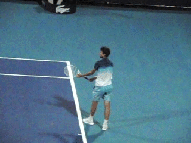
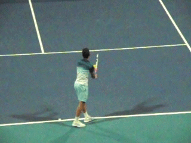
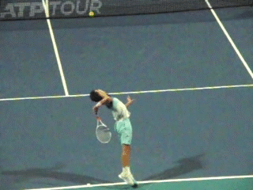
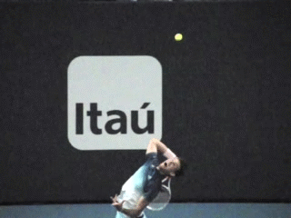
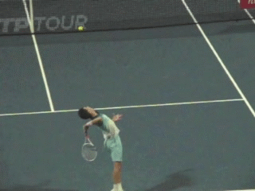
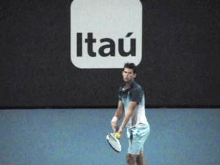
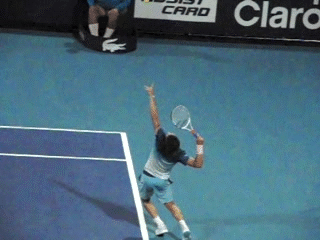

Dominic Thiem's Second Serve:¶
A Perfect Model?
Analyzed by John Yandell

The heavy kick 2nd Serve of Dominic Thiem.
Last month we took a look at the technical serve motion of Alexander Zverev (Click Here) and the missing element that I think is contributing to his second serve problems and especially his double faults. Now let's look at the second serve of the player who defeated Zverev to win the U.S. Open in 5 excruciating sets—Dominic Thiem.
I wrote that I thought Zverev's lack of torso rotation—first away from the ball in the wind up and then forward back to the contact--forced him to rely too much on his hand and arm and helped to create the nervousness and doubt that led to his wild inconsistency.
I compared Zverev's turn or lack of it to Roger Federer, but Thiem is another awesome example. Besides the turn, I love almost everything else about Thiem's motion, although there may be limitations on how it applies to the rest of us. So let's take a detailed look.
Platform!
Let's start with his platform stance. It's very similar to Federer. With a small adjustment at the start of the motion, he aligns the front foot so that it is essentially parallel to baseline. The back foot is also parallel to the baseline and offset behind the front foot with the toes a little ahead of the heel of the front foot. The feet aren't spread too wide, about shoulder width.

Thiem's stance, body turn, and windup shape.
That stance facilitates the body turn virtually automatically. As the knees bend the shoulders turn onto a line that is basically parallel to a line drawn across the toes of the feet. He probably turns the shoulders away from the ball 45 up to 60 degrees.
Although we know you can use a variety of abbreviated windups and serve very well, I really like his semi-pendulum motion, again similar to Roger, keeping the arm straight from the shoulder and starting the bend in the elbow only after the ball toss. I think it's the simplest windup--definitely the best model for players at all levels.
Arm Action
Dominic's arm action upward and outward is awesome. He goes from a full drop with his racket falling along his right side up to the ball by extending the elbow with the racket on edge until only a few frames before contact.
Then the hand, arm, and racket rotation from the shoulder kicks in—what is technically called internal shoulder rotation. This rotation continues outward into the forward swing until the racket face turns over and is perpendicular to the court.
That's 90 degrees or so of rotation after contact. It's often asked why is this rotation important when obviously the ball is long gone off the racket?
The answer is that it is the consequence of the acceleration of the racket head going into contact. Think of it like the follow-through on a groundstroke.

Thiem's racket drop and upward and outward swing.
You'd have to decelerate the racket radically going into contact to stop that rotation from continuing. Like a groundstroke the continued rotation, is the consequence of the racket speed.
It's interesting because a few years ago in Miami I was filming Dominic in practice and ran into his coach at the time, Gunter Bresnick, who developed Dominic from a young age and changed him to a one-handed backhand. (Click Here for the interview I did with Gunter on that a couple of years prior at Indian Wells.)
I noticed, looking at the film, that Dominic wasn't fully rotating the arm through contact on many serves. So I sat down and showed it to Gunter. Gunter said he believed that this rotation was critical and that he would work with Dominic on it.
Why High Speed Video?
Gunter said that without the high speed video it had been hard to tell whether he was really making it all the way all the time. The next time I filmed Dominic it looked like that work had been successful because his motion looked exactly the way it does in this article.
Arm Angle
A disputed point about the upward swing on a kick serve is the angle of the arm and racket to the baseline after contact as it moves out into the followthrough. This angle is the indication of the racket path in the upward swing.

Dominic Thiem's serving arm angle crossing the baseline.
I've heard it argued that the racket arm should be at a very small angle on the second serve, approaching parallel to the baseline. That isn't what the video shows.
In reality that angle is more like 45 degrees in the deuce court, and usually slightly less in the ad. But it is still substantial and critical. It's what creates the racket path and the combination of speed and spin in a kick second serve.
It's not just Dominic. It's the same for two other great platform stance servers: Roger Federer and Pete Sampras.
Ball Toss
All three of these players have predominantly kick second serves. That's a function of the swing path we have been looking at, but the prerequisite for the swing path is the placement of the ball toss. It's critical.
Compared to the toss on the first serve, the second serve toss is further to the left and also further behind. When we compare the three players, Sampras and Thiem are slightly more extreme, Federer slightly less.
Looking at Dominic from the rear view his ball toss at contact is about over the center of his head. Pete appears to be about the same. Federer is a little more to his right, maybe directly above his right ear.

Theim and Sampras have a ball position at contact slightly more to the left than Federer with finishes somewhat more to the right.
Looking at it from the side though all three appear to make contact somewhere over the top of their heads. So there is a small range there in the left to right ball position at contact.
But the key point is that the position of the ball means that, compared to the first serve, the motion is more directly upward. You can see this in the contact point. The tip of the racket is angled to the players' left. Maybe double the angle of the first serve.
Players sometimes think that there is such a thing as a "first serve" and a different "second serve." But it's the toss. In reality if the ball placement is correct and the player hits upward and outward to the extension of the motion the kick tends to happen naturally.
This upward and outward motion should include the full rotation of the hand, arm, and racket so the face of the racket is perpendicular to the court or close. After the extension point the arm just relaxes and falls forward and down.
Because of the difference in the ball position, Thiem and Sampras tend to finish more in the center of the body or on the right side, while Federer tends to finish more across the body with the hand aligned with the front leg.
Criticism?
There isn't much to criticize in Dominic's second serve—at least for Dominic. But what this analysis shows is there are a few points for lower level players in considering his motion as a model.

Compare the head position at contact for Dominic, Roger and Pete.
First that finish. A lot of analysis I've read says if you want to kick the serve like Sampras or Thiem, just finish on the right side. That's totally backwards.
If you have a more extreme ball position at contact, you may often finish on the right side. Not the other way around.
It's very tough for the average player, however, to make that extreme toss placement work. So I like the slightly less extreme Federer ball position at contact. But I know that won't stop 3.5 NTRP players from trying to be Sampras or Thiem.
The second point is head position. Dominic's head isn't up looking at the ball at contact. That used to be considered an iron fundamental. Until high speed film showed that great servers like Greg Rusedski and Andy Roddick were also looking forward rather than up at the contact.
But for the vast majority of players I think it's better to keep the head more up toward the—like Roger Federer and also Sampras.
I also think Federer, is a better second serve model than Dominic on another point. This is the landing in the court and the body balance at the landing.

Dominic lands further in the court with his torso angled more forward compared to Federer.
Is it just Dominic's leg's explosiveness? Possibly. Whatever the reason he comes down 2 feet or so inside the court. He has a huge back leg kick back and lands with his torso leaning far forward from the waist.
Federer typically lands with his heel just inside the baseline and with his body more upright and balanced. That's a more realistic model for the rest of us and makes for an easier recovery to ready position to deal with the return.
This are just a few points in an unending debate. What do pro players do and what should I try to do like them? Like I said Dominic has multiple great elements, but some aren't ideal for most players. (Click Here for a detailed article on the second serve I did with Federer as the model.)
So there you have it. The amazing second serve of Dominic Thiem and a few comparison points that show what to copy and maybe not what to copy—all courtesy of amazing Tennisplayer high speed video footage. And guess what? You can study his second serve as well as his first in that video this month in the High Speed Archives. (Click Here.)

John Yandell is widely acknowledged as one of the leading videographers and students of the modern game of professional tennis. His high speed filming for Advanced Tennis and Tennisplayer have provided new visual resources that have changed the way the game is studied and understood by both players and coaches. He has done personal video analysis for hundreds of high level competitive players, including Justine Henin-Hardenne, Taylor Dent and John McEnroe, among others.
In addition to his role as Editor of Tennisplayer he is the author of the critically acclaimed book Visual Tennis. The John Yandell Tennis School is located in San Francisco, California.